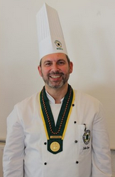
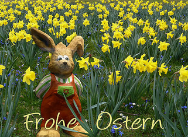
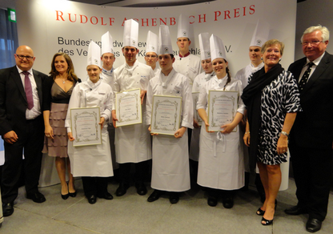
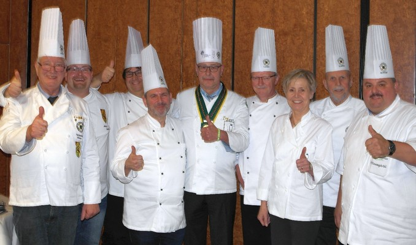
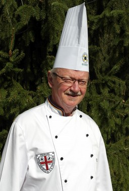
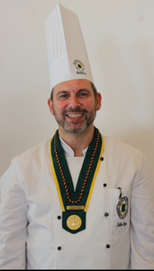
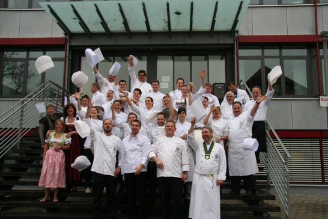
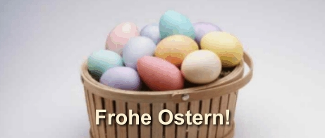
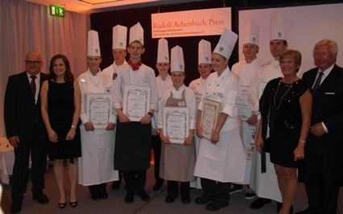
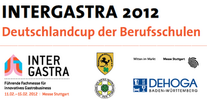

2019 2019 2019 Talentschmiede 2019 2019 2019


Wie bereits bei der Frühjahrstagung am 14.März 2009 im Konzil in Konstanz beschlossen,
wird Volker Egen nun als Landesverbandsvorsitzender an erster Stelle stehen. Karl Haaf
arbeitet bis zu den Neuwahlen in zwei Jahren als Stellvertreter weiter im Vorstand mit
und fühlt sich hier im Besonderen um die Kontakte zu den Sponsoren verantwortlich.
Für seine Verdienste wurde Karl Haaf die Goldmedaille des Verbands der Köche
Deutschlands überreicht. Ehrende Worte für die jahrelang geleistete Arbeit in seinem
Zweigverein Nordschwarzwald, dem Landesverband der Köche Baden-Württemberg
und im Vorstand des VKD fand der Präsident Robert Oppeneder, der im Beisein der
neuen Geschäftsführerin des VKD, Frau Dr. Bingel und den sehr zahlreich erschienen Zweigvereinsvorsitzenden oder deren Delegierten die Ehrung vornahm.
Besonders hob Oppeneder Haaf's Zielstrebigkeit, seine Verlässlichkeit und seine
Verbundenheit zum Kochberuf hervor, die sich auch in seiner Arbeit zeigt.
Generalversammlung des Verbandes der Köche Deutschland e.V.
Alle Mitglieder des Verbandes sind eingeladen an der GV teilzunehmen.
Liebe Kolleginnen und Kollegen,

Talentschmiede 2016

Bericht vom Rudolf Achenbachpreis Finale in Frankfurt

Robert Oppeneder Präsident des Verbandes der Köche Rede zum Rudolf Achenbach Preis 2012
Glückwünsche des Landesverbandsvorsitzenden Volker Egen

Der Alte und Neue Vorstand des Landesverbandes Baden-Württemberg während
der Landesverbandstagung mit dem LV-Bayern in Adelsried.

{kind=link}
Kollege Martin Baumgärtel vom Löchnerhaus hat


Auf dem Bild klicken- laden dauert etwas
10.Talentschmiede des Landesverbandes Baden-Württemberg in
der Landesberufsschule in Villingen-Schwenningen
Vom 15.- bis 17.November haben 18 junge Köche an dieser Forttbildung teilgenommen.
PDF herunter laden. FlashDatei herunter laden.

Allen Köchinnen und Köchen zum Osterfest 2010

Bericht vom Rudolf Achenbachpreis Finale in Frankfurt
Ausschreibung PDF-Datei

Ausschreibung und Teilnahmebedingungen für den
Kronenpokal Nordschwarzwald
Verarbeitung von regionalen Produkten und
Förderung der Esskultur
Landesverband der Köche Baden Württemberg
und Kochclub Nordschwarzwald e.V.
1.Veranstalter:
Der Landesverband der Köche Baden- Württemberg und der Kochclub Nordschwarzwald veranstalten den zweiten Regionalen Wettbewerb um den Kronenpokal.
Der Wettbewerb findet am 20. November 2009 in Wart, im Hotel Sonnenbühl statt.
Der zweite Regionale Wettbewerb um den Kronenpokal ist ein Kochwettbewerb.
2. Zweck:
Der Landesverband der Köche Baden Württemberg, und der Kochclub Nordschwarzwald e.V. haben sich das Ziel gesetzt, die Verarbeitung von regionalen Produkten und die Erhaltung der Esskultur zu pflegen und zu verbessern, sowie die kulinarischen Besonderheiten des Nordschwarzwalds hervorzuheben. Daneben soll der Wettbewerb den hohen Standard und die Leistungsfähigkeit des Berufsstandes der/des Köchin/Kochs dokumentieren und kreative Köche/innen der fachkundigen und der interessierten Öffentlichkeit vorzustellen.
3. Teilnahmebedingungen/ Kriterien:
Teilnehmen kann jede/r ausgebildete/r Köchin/Koch die/der das 18. Lebensjahr vollendet hat.
Erwartet werden Wettbewerbsbeiträge, die dazu beitragen, die Regionalität dem Tischgast noch attraktiver und erlebnisreicher vorzustellen.
Aus allen schriftlichen Bewerbungen wird eine freie, unabhängige, fachkundige Jury die sechs besten Ausarbeitungen ermitteln. Diese werden dann zur Endausscheidung eingeladen.
Nur vollständig ausgefüllte Unterlagen, die fristgerecht eingegangen sind, können bei der Auswahl berücksichtigt werden.
Während des praktischen Wettbewerbes sind die gesetzlichen Vorschriften, wie die Deutsche Lebensmittel – Hygieneverordnung einzuhalten.
Die Bewertung durch die Jury ist unanfechtbar. Der Rechtsweg ist ausgeschlossen.
Der/die Teilnehmer/in gibt das Recht zur Vermarktung seiner Rezepte an den Veranstalter ab.
Aufgabenstellung:
Ausarbeitung und Zubereitung eines 4-Gang-Menüs für 10 Personen bestehend aus:
Suppe, Zwischengericht (kalt oder warm), Hauptgericht und Dessert, das eindeutig die Regionalität Schwarzwald erkennen lässt. Eine Zubereitungsanweisung und Kalkulation für 10 Personen ist zu erstellen.
Die Warenkalkulation sollte zu marktüblichen Preisen vorgenommen werden. Der Wareneinsatz pro Person darf 15,00 € nicht übersteigen.
Die Lebensmittel für die einzelnen Menügänge sind vom Teilnehmer mitzubringen; sie werden mit
150,00 € = 10 Menüs vergütet. Die in der Materialanforderung angegebenen Bruttomengen bei den Materialien sind auch zu verarbeiten.
Das Anrichten der Menüs ist wie folgt vorzunehmen:
1 Portion Tellerservice für die Jury
9 Portionen Tellerservice für geladene Gäste
Anrichtegeschirr
Es sind Teller in 27 cm und 29 cm ? Durchmesser vorhanden
Bei Suppe in Tassen oder Teller
Vorbereitete Speisen und/oder Dekorationen dürfen nicht mitgebracht werden, außer:
-Heller und /oder Brauner Fond
-Bouillon
-Gemüse, gewaschen, geputzt bzw. geschält,
jedoch nicht zerkleinert.
Alle anderen Arbeiten müssen während des Wettbewerbs durchgeführt werden.